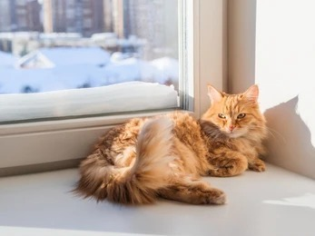

Gato
Definición
Los gatos son unos excelentes compañeros para cualquier hogar.
Pueden ser tan cariñosos como los perros, pero van a presentar
considerables diferencias, no solo físicas. Son animales independientes,
curiosos y juguetones. Poseen una dentición especializada para desgarrar
carne y una lengua áspera cubierta de pequeñas papilas queratinizadas que
les permite lamer y acicalar su pelaje.
Hábitat
El hábitat de un gato doméstico, aquel correspondiente a los
que viven cuidados por los humanos en sus hogares, y otros gatos,
considerados salvajes, que se encuentran en entornos naturales sin
contacto con personas. Alrededor de los núcleos humanos permanecen
gatos callejeros que se buscan la vida sin que ninguna persona se responsabilice
directamente de ellos. En esas condiciones los gatos solo sobreviven.
Consejos
- Uno de los aspectos más importantes que debemos cuidar
a la hora de mantener a nuestros mininos sanos es su alimentación.
- Debemos cuidar mucho la higiene del gato con una limpieza diaria
del arenero donde hacen sus necesidades.
-Otro de los pilares básicos para nuestro gato es realizar las visitas
la veterinario que sean necesarias. Desde que son cachorros, es
importante controlar que todo esté bien, realizar las pruebas necesarias.
